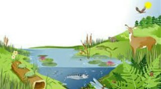
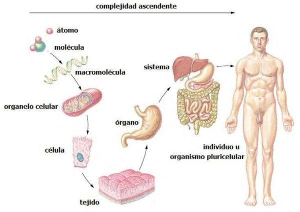

Ecología y sus campos de estudio.
|
La ecología como ciencia integradora y multidisciplinaria.
En éste primer tema aprenderemos los principios de la ecología, junto con definiciones, el autor, y las diferentes ciencias que se relacionan con la ecología. |
Estructura del ambiente.
|  |
Factores bióticos y abióticos.
En éste tema comprenderemos cada componente de nuestro planeta, pero para ello necesitas primero comprender la estructura y función de los ecosistemas. |
|  |
Niveles de organización de la materia.
Aquí veremos cómo está conformada cada parte de nuestra biosfera, desde lo más pequeño a lo más grande. |
|
Atributos de una población y de una comunidad.
En éste tema entenderemos por medio de analisis de poblaciónes y comunidades, características que los conforman. |
|
Factores limitantes.
En éste tema veremos la resistencia ambiental que incluye factores para limitar el crecimiento de una población. |
Educación ambiental.